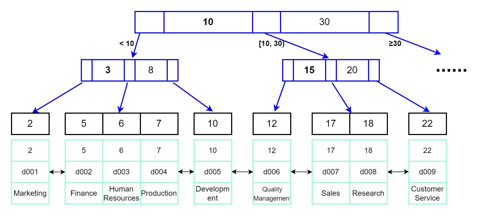
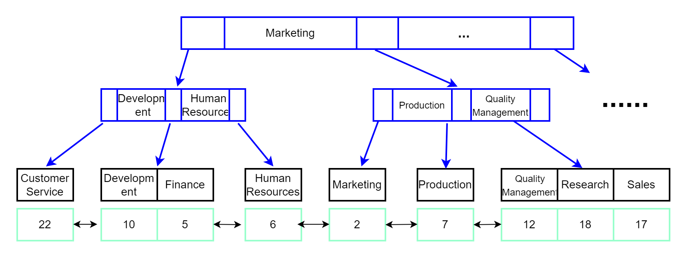

索引主要是用来提高数据库的查询效率的，它对指定的列或列的集合生成索引，然后可以通过索引来检索目标数据，就像目录一样，缩小了扫描范围，大大提高了查询效率。
如果不使用索引，MySQL服务器会从第一行开始查询，直到找到相关行，数据表越大，耗费时间就越多。本文将介绍索引的一些基本原理，了解它是如何优化数据库性能的。
简介
MyISAM存储引擎使用三个文件来表示每个表：
- frm文件：格式文件，存储表结构的定义
- MYD文件：数据文件，存储表行数据
- MYI文件：索引文件，存储表上索引
InnoDB存储引擎的存储文件包括两个文件：frm 和 ibd
- frm文件存储表结构定义
- ibd文件存储表的内容，存储数据和索引
MEMORY存储引擎也frm格式文件存储表结构，而数据及索引存储在内存中，因此它的查询速度更快。
MySQL索引是在存储引擎层实现的，因此不同引擎数据库的底层的实现可能不同，列举几种实现索引的数据结构：
- 哈希表：键-值（key-value）方式存储数据，需要注意出现哈希碰撞（Hash Collisions）的情况。另外哈希表的 Hash 码不是按顺序存放的，因此哈希索引更适用于等值查询，对于范围查找就不适合了。
- 二叉搜索树：查询的时间复杂度O(log(N))，由于在数据量大的情况下会使用大量的数据块，频繁读取磁盘，导致查询效率变慢。因此实际使用中通常会使用N叉树。
- B树：B树就是一种N叉树，树的高度降低了。每个节点存储Key值和数据。
- B+树：B+树是对B树的改进，数据存储在同一层的叶子节点上，并且按顺序排列，非叶子节点不再存储数据，只存储key的信息。这是目前MySQL索引最常用的数据结构。
- 其他：当然还有其它数据结构也可以用来保存索引，比如有序数组，跳表、LSM 树等。
InnoDB 存储引擎使用的索引数据结构为B+树，InnoDB也是最常用的MySQL数据库引擎，下面来介绍以下B+树索引模型。
B+ 树索引模型
先创建一个使用InnoDB 存储引擎的表departments，主键为id，辅助索引dept_name：
1 | create table departments( |
查询数据：
1 | mysql> select * from departments; |
查看索引：1
2
3
4
5
6
7
8
9
10
11
12
13
14
15
16
17
18mysql> show index from departments;
+-------------+------------+-----------+--------------+-------------+-----------+-------------+----------+--------+------+------------+---------+---------------+---------+------------+
| Table | Non_unique | Key_name | Seq_in_index | Column_name | Collation | Cardinality | Sub_part | Packed | Null | Index_type | Comment | Index_comment | Visible | Expression |
+-------------+------------+-----------+--------------+-------------+-----------+-------------+----------+--------+------+------------+---------+---------------+---------+------------+
| departments | 0 | PRIMARY | 1 | id | A | 9 | NULL | NULL | | BTREE | | | YES | NULL |
| departments | 0 | dept_name | 1 | dept_name | A | 9 | NULL | NULL | YES | BTREE | | | YES | NULL |
+-------------+------------+-----------+--------------+-------------+-----------+-------------+----------+--------+------+------------+---------+---------------+---------+------------+
2 rows in set (0.13 sec)
mysql> desc departments;
+-----------+-------------+------+-----+---------+-------+
| Field | Type | Null | Key | Default | Extra |
+-----------+-------------+------+-----+---------+-------+
| id | int(11) | NO | PRI | NULL | |
| dept_no | char(4) | YES | | NULL | |
| dept_name | varchar(40) | YES | UNI | NULL | |
+-----------+-------------+------+-----+---------+-------+
3 rows in set (0.00 sec)
可以看到有两个索引：主键索引id和唯一索引dept_name，每一个索引在 InnoDB 里面对应一棵 B+树。
关于B+树的特性这里就不介绍了，主键索引示意图如下：

唯一索引dept_name示意图如下：

图中的数据页之间通常使用双向链表进行连接，可以减少查询时间，特别是区间查询时。
回表
主键索引就是在主键上添加的索引，它的叶子节点保存了整行数据。
辅助索引是主键之外的索引，也被称为二级索引（secondary index）。InnoDB引擎的辅助索引引用主键作为data域，也就是说，使用辅助索引的需要先搜索当前辅助索引树，得到主键值后，再到主键索引搜索一次，通过主键索引查找到目标数据，这个过程称为回表。因此，在实际使用过程中，如果能使用主键查询就应该优先选择它。
比如通过辅助索引dept_name查询部门名称为Research的dept_no：select dept_no from departments where dept_name='Research';
- 搜索dept_name索引树，得到dept_name为Research的id为18；
- 通过id索引树查询id为18的行记录。
如果知道id，直接使用id查询，效率会更高。
1 | mysql> select dept_no from departments where dept_name='Research'; |
聚簇索引和非聚簇索引
上面介绍的是InnoDB存储引擎的主键索引和辅助索引，MyISAM引擎的索引结构与它有一定差异。MyISAM存储引擎使用MYD文件存储表行数据，使用MYI文件存储表上索引。InnoDB存储引擎使用ibd文件存储表数据和索引。
InnoDB引擎的索引和数据是存储在一起的，称为聚簇索引（clustered index）。
MyISAM的索引和数据是分开存储的，这种称为非聚簇索引（unclustered index）。非聚簇索引只存储索引字段和记录所在的位置，通过索引找到记录所在的位置，然后再根据位置去获取记录。因此MyISAM引擎的主键索引和辅助索引在结构上没有什么差别，叶子节点都使用一个地址指向真正的表数据。
聚簇索引的查找效率要比非聚簇索引快，因为聚簇索引查找到索引就查找到了数据位置，而非聚簇索引查找到索引之后，根据记录的数据地址，再去查找数据；
由于MyISM使用非聚簇索引，主键索引和辅助索引树是独立的，因此通过辅助索引查询时不需要访问主键的索引树。
页分裂
虽然聚簇索引查询速度相对更快，但聚簇索引对写入效率影响更大。为了保证B+树中索引的有序性，在进行插入和删除操作的时候需要对索引进行维护。
上面的示意图是3阶B+树，如果要插入一个id为11的记录，直接在10后面插入就可以了。而要插入id为4的记录，就需要挪动后面的数据来空出位置，这个过程称为页分裂。
如果相邻两个页由于删除了数据空出大量空间，通常还会对数据页进行合并。因此删除、插入操作可能会出现大量的索引分裂和合并，严重影响效率。
那么有什么解决方案呢？最好的解决方案就是使用递增主键，这样在插入记录时，不会进行索引分裂，直接追加在后面就可以。因此，选择主键时最好采用自增主键。
联合索引
联合索引是对两个或者更多的列添加索引，B+树中的key值变成了多个，MyISAM和InnoDB引擎限制最多列数为16。
联合索引查询时遵循“最左前缀”原则，即使用 where 条件查询时最左边的为起点索引都能匹配上。所以在创建联合索引时，通常将使用最频繁的列放在最左边。下面看一个示例：
student表数据如下：
1 | mysql> select * from student; |
添加一个(name, age)的联合索引: alter table student add index name_age(name,age);
1 | mysql> alter table student add index name_age(name,age); |
查询时如果想要使用到创建的联合索引，可以使用name、(name,age)或者(age,name)这几种组合：
1 | select * from student where name='张三'; |
1 | mysql> explain select * from student where name='张三'; |
可以看到select * from student where age=21; 没有使用到索引。
语句select * from student where age=21 and name='张三';也能使用到索引的原因是SQL查询时分析器会对查询语句进行优化，选择效率最高的索引查询顺序。(SQL查询顺序可参考MySQL基础架构：SQL查询语句执行过程)
索引语法
下面来介绍一些常用的MySQL索引语法。
创建索引
建表时创建索引：
1 | CREATE TABLE tbl_name( |
新建索引：
1 | CREATE INDEX index_name ON tbl_name(字段名); |
修改表结构新建索引:1
ALTER TABLE tbl_name ADD INDEX index_name ON 字段名;
创建唯一索引：1
2
3
4
5
6
7
8CREATE UNIQUE INDEX index_name ON tbl_name(字段名);
ALTER TABLE tbl_name ADD UNIQUE index_name ON 字段名;
-- 建表时指定
CREATE TABLE tbl_name(
id int not null primary key,
name varchar(40) null,
age int null,
UNIQUE INDEX index_name(字段名)) engine=InnoDB;
注意唯一索引索引列的值必须唯一，允许为NULL。
创建主键时会自动创建主键索引，一张表只能有一个主键索引，不允许重复，不允许为 NULL；另外，加有 unique 约束的字段上会自动创建索引。
创建组合索引：1
2
3
4CREATE INDEX index_name ON tbl_name(字段1,字段2);
ALTER TABLE tbl_name ADD INDEX index_name(字段1,字段2);
-- 建表时指定
INDEX index_name(字段1,字段2)
显示索引
1 | SHOW INDEX FROM tbl_name; |
删除索引
1 | ALTER TABLE tbl_name DROP INDEX index_name; |
不能删除主键索引。
重命名索引
1 | ALTER TABLE tbl_name RENAME INDEX index_name TO new_index_name; |
总结
本文简单介绍了常用的B+树索引模型，B+树只有叶子节点才会存储数据，非叶子节点只存储键值，最底层的叶子节点形成了一个双向有序链表。另外要注意聚簇索引和非聚簇索引的区别，它们在数据存储方式上有差异。
联合索引查询时需要遵循“最左前缀”原则，因此在创建和使用联合索引时需要考虑到这一点。
参考：
- https://dev.mysql.com/doc/refman/8.0/en/innodb-limits.html
- https://dev.mysql.com/doc/refman/8.0/en/myisam-storage-engine.html
本文标题:MySQL索引介绍
文章作者:hiyo
文章链接:https://hiyongz.github.io/posts/database-for-mysql-index/
许可协议:本博客文章除特别声明外，均采用CC BY-NC-ND 4.0 许可协议。转载请保留原文链接及作者。